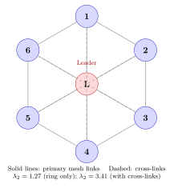
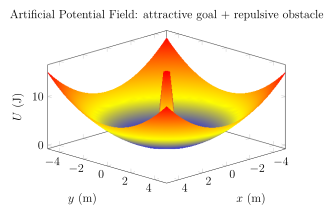

Chapter 11: Swarm Systems¶
11.1 Swarm Systems¶
The emergence of affordable, miniaturised unmanned aerial vehicles has made it practical to deploy tens, hundreds, and — in near-future programmes — thousands of individual agents acting in a coordinated, goal-directed manner. A swarm in this engineering context is a multi-agent system in which each platform executes relatively simple local rules, yet the collective produces complex, adaptive global behaviour that far exceeds what any single agent could accomplish alone. This chapter presents the theoretical foundations drawn from collective intelligence, the communication and networking infrastructure that ties agents together, the formation-control mathematics that keeps them spatially organised, and the mission-planning algorithms that distribute work across the fleet. Military and civil applications are surveyed in depth, and the chapter closes with an honest assessment of the open engineering and ethical challenges that remain.
11.2 Swarm Intelligence Theory¶
11.2.1 Biological Inspiration¶
Swarm intelligence (SI) is rooted in the observation that social insects and certain vertebrates achieve highly efficient, resilient collective behaviour without a centralised controller. Three biological systems have been particularly influential in shaping engineering algorithms.
Ant Colonies (Formica spp.).
Individual ants are cognitively limited, yet a colony of \(10^5\)–\(10^6\) individuals can locate the shortest path between nest and food source, adaptively re-route around obstacles, and allocate labour across foraging, defence, and construction roles. The key mechanism is stigmergy: ants deposit pheromone trails on successful paths, and other ants preferentially follow higher-concentration gradients. Evaporation of pheromone over time prevents premature convergence to a sub-optimal path. This indirect, environment-mediated communication is cheap, anonymous, and asynchronous — properties shared with many engineered swarm protocols.
Honeybee Swarms (Apis mellifera).
When a bee colony outgrows its hive, approximately half the workers depart with the old queen to find a new nest site. Scout bees explore candidate sites and communicate their quality via the waggle dance, a figure-eight motion whose duration encodes distance and whose orientation encodes direction. High-quality sites attract more dances, which recruit more scouts in a positive-feedback loop that converges the swarm to a single site with remarkable reliability. The analogy to distributed optimisation — and specifically to the Consensus-Based Bundle Algorithm (§11.3.6) — is direct: agents broadcast bids, superior bids attract imitation, and the collective converges to a near-optimal solution.
Starling Murmurations (Sturnus vulgaris).
Flocks of 10,000–100,000 starlings produce fluid, three-dimensional formations that evade aerial predators. High-speed video analysis by Ballerini et al. (2008) revealed that each bird responds to its six or seven nearest topological neighbours regardless of metric distance, giving the interaction radius a density-independent character. This topological coupling, combined with a maximum turn-rate constraint, produces wave-like coherence propagation at speeds of \(\sim\)20–40 ms\(^{-1}\) through the flock — far faster than individual reaction times. The practical implication for drone swarms is that metric-range thresholds can fail in variable-density swarms; topological neighbour graphs are more robust.
11.2.2 Emergence and Stigmergy¶
Emergence is the appearance of macroscopic order that is qualitatively different from, and irreducible to, the microscopic rules from which it arises. In the swarm context, each agent obeys simple local rules operating on locally sensed information; the global pattern — formation, path, assignment — is an emergent property of the collective. Emergent systems are intrinsically robust: removing one agent perturbs the collective only incrementally, because there is no single node whose failure cascades globally.
Stigmergy is a specific mechanism of emergence in which agents communicate indirectly by modifying a shared environment. In drone swarms the “environment” may be a shared data structure in cloud memory, a heat-map overlaid on a battlefield, or pheromone-analogue variables updated on a central blackboard. The defining feature — that agents read and write the environment rather than exchanging direct point-to-point messages — reduces communication overhead from \(O(N^2)\) to \(O(N)\) in many realisations.
11.2.3 Reynolds Boids Model¶
Craig Reynolds (1987) introduced the Boids model, demonstrating that three simple rules applied to simulated bird-like agents produce convincing flocking behaviour. Each agent \(i\) at position \(\mathbf{p}_i \in \mathbb{R}^3\) with velocity \(\mathbf{v}_i \in \mathbb{R}^3\) applies three steering accelerations:
Rule 1 — Separation.
Avoid collisions with nearby neighbours. Let \(\mathcal{N}_s(i)\) be the set of agents within separation radius \(r_s\):
The inverse-square weighting ensures that very close neighbours produce strong repulsion.
Rule 2 — Alignment.
Match velocity with neighbours within alignment radius \(r_a\):
Rule 3 — Cohesion.
Steer towards the centroid of neighbours within cohesion radius \(r_c\):
The total acceleration is a weighted sum:
with gains \(k_s, k_a, k_c > 0\) and weights \(w_s, w_a, w_c\) tuned to application. In practice, separation is given highest priority (largest \(w_s\)) to prevent mid-air collisions; this is realised through a priority-ordered subsumption hierarchy rather than a weighted sum.
| Parameter | Symbol | Value | Notes |
|---|---|---|---|
| Separation radius | \(r_s\) | 3 m | Hard minimum inter-agent gap |
| Alignment radius | \(r_a\) | 15 m | Velocity matching range |
| Cohesion radius | \(r_c\) | 25 m | Group staying range |
| Separation gain | \(k_s\) | 5.0 | Strong; collision critical |
| Alignment gain | \(k_a\) | 1.2 | Moderate |
| Cohesion gain | \(k_c\) | 0.8 | Weak; loose formation |
| Max speed | \(v_{\max}\) | 12 m/s | Battery and airframe limit |
| Max acceleration | \(a_{\max}\) | 4 m/s\(^2\) | Motor torque limit |
11.2.4 Particle Swarm Optimisation (PSO)¶
PSO, introduced by Kennedy and Eberhart (1995), treats candidate solutions as particles moving through a search space. Each particle \(i\) maintains a position \(\mathbf{x}_i\), a velocity \(\mathbf{v}_i\), a personal best position \(\mathbf{p}_{\text{best},i}\), and shares knowledge of the global best \(\mathbf{g}_{\text{best}}\). The velocity update equation is:
where \(w\) is the inertia weight (typically 0.4–0.9, often linearly decayed), \(c_1\) is the cognitive coefficient (\(\approx\)2.05), \(c_2\) is the social coefficient (\(\approx\)2.05), and \(r_1, r_2 \sim \mathcal{U}(0,1)\) are independent random scalars drawn each iteration.
In drone swarm mission planning, PSO has been applied to: (a) optimising waypoint sequences for multi-drone area coverage, (b) solving the multi-target assignment problem, (c) tuning PID autopilot gains distributed across the fleet. The inertia weight \(w\) controls exploitation versus exploration: large \(w\) favours broad exploration; small \(w\) drives refinement around known good solutions. Clerc and Kennedy (2002) derived a constriction-factor form that guarantees convergence:
11.2.5 Ant Colony Optimisation (ACO)¶
ACO (Dorigo, 1992) solves combinatorial optimisation problems, notably the travelling salesman problem (TSP), by modelling artificial pheromone trails. Consider a graph \(G = (V, E)\) of \(n\) nodes representing waypoints or targets. A synthetic ant \(k\) at node \(i\) selects the next node \(j\) probabilistically:
where \(\tau_{ij}(t)\) is the pheromone intensity on edge \((i,j)\) at time \(t\), \(\eta_{ij} = 1/d_{ij}\) is a heuristic visibility (inverse distance), \(\alpha\) controls pheromone influence (\(\approx\)1), \(\beta\) controls heuristic influence (\(\approx\)2–5), and \(\mathcal{A}_k\) is the set of allowed next nodes (not yet visited).
After all ants complete tours, pheromone is updated:
where \(\rho \in (0,1)\) is the evaporation rate and \(\Delta\tau_{ij}^k = Q/L_k\) if ant \(k\) used edge \((i,j)\) in its tour of length \(L_k\), else 0. Evaporation \(\rho\) prevents unlimited pheromone accumulation and enables adaptation when the environment changes. In multi-drone path planning, each drone acts as an ant, depositing virtual pheromone on its communication network; convergence to near-optimal routes has been demonstrated in simulation for fleets up to \(N = 100\).
11.3 Drone Swarm Architectures¶
11.3.1 Centralised Architecture¶
A ground-based mission computer computes plans and sends explicit commands to every agent.
-
Advantages: global optimality possible; simple agent software; easy operator override.
-
Disadvantages: single point of failure; uplink bandwidth scales as \(O(N)\); round-trip latency limits real-time responsiveness; loss of the C2 link renders the entire swarm inoperative.
11.3.2 Decentralised Architecture¶
Each agent maintains its own world model and computes its own decisions using locally available information. Communication is peer-to-peer or via broadcast.
-
Advantages: no single point of failure; scales to large \(N\); continues to operate under partial communication loss.
-
Disadvantages: sub-global optimality; harder to guarantee conflict-free task assignment; debugging and verification is complex.
11.3.3 Leader-Follower Architecture¶
One designated leader navigates a prescribed trajectory; followers maintain desired relative offsets \(\mathbf{d}_i\) from the leader. If the leader’s state is \(\mathbf{x}_L\), follower \(i\) tracks:
where \(\mathbf{R}_L\) is the leader’s rotation matrix so the formation rotates with the leader. Vulnerability: if the leader is destroyed or jammed, the formation dissolves unless followers automatically elect a successor through a consensus vote.
11.3.4 Virtual Structure¶
The entire formation is modelled as a rigid body with a virtual centre of mass \(\mathbf{p}_c\) and orientation \(\psi_c\). Each agent \(i\) is assigned a body-frame offset \(\boldsymbol{\delta}_i\); its desired world-frame position is:
Formation error for agent \(i\) is \(\mathbf{e}_i = \mathbf{p}_i - \mathbf{p}_i^*\). A proportional-derivative controller drives \(\mathbf{e}_i \to \mathbf{0}\). The virtual structure simplifies collision avoidance analysis because, by construction, no two desired positions overlap.
11.3.5 Behaviour-Based Architecture¶
Derived from Brooks’ (1986) subsumption architecture, each agent runs a stack of simple behaviour modules, ordered by priority:
-
Avoid collision (highest priority)
-
Maintain formation
-
Follow waypoint
-
Loiter (lowest priority — default)
Higher-priority modules can subsume (inhibit the output of) lower-priority modules. The architecture is inherently reactive and requires no world model, making it computationally lean and suitable for resource-constrained nano-drones.
11.3.6 Market-Based / CBBA Architecture¶
Agents bid on tasks as in an economic auction. The Consensus-Based Bundle Algorithm (CBBA, Choi et al. 2009) is the leading distributed task allocation algorithm for drone swarms (see §11.6.1 for full treatment).
11.4 Consensus and Coordination Algorithms¶
11.4.1 Graph-Theoretic Foundations¶
A drone swarm communication topology is modelled as a directed or undirected graph \(G = (V, E)\) with vertex set \(V = \{1, …, N\}\) (agents) and edge set \(E \subseteq V \times V\) (communication links). Key matrices:
Adjacency matrix \(\mathbf{A}\).
\(A_{ij} = 1\) if agent \(j\) can communicate with agent \(i\), else 0. For an undirected graph \(\mathbf{A} = \mathbf{A}^\top\).
Degree matrix \(\mathbf{D}\).
\(D_{ii} = \sum_j A_{ij}\), all off-diagonal entries zero.
Laplacian matrix \(\mathbf{L}\).
\(\mathbf{L}\) is positive semi-definite for undirected graphs. Its eigenvalues satisfy \(0 = \lambda_1 \le \lambda_2 \le \cdots \le \lambda_N\). The algebraic connectivity \(\lambda_2\) (Fiedler, 1973) quantifies how well-connected the graph is.

11.4.2 Average Consensus Protocol¶
Each agent \(i\) maintains a scalar state \(x_i\) (e.g., a sensor measurement). The continuous-time consensus protocol drives all states to the average:
In vector form \(\dot{\mathbf{x}} = -\mathbf{L}\,\mathbf{x}\), with solution \(\mathbf{x}(t) = e^{-\mathbf{L}t}\mathbf{x}(0)\). Because \(\mathbf{L}\) has one zero eigenvalue (eigenvector \(\mathbf{1}\)), the state converges to \(x^* = \frac{1}{N}\sum_i x_i(0)\) (the initial average) with exponential rate \(\lambda_2\):
Increasing graph connectivity (larger \(\lambda_2\)) directly accelerates consensus — justifying the cross-links in Figure 11.1.
11.4.3 Discrete-Time Consensus¶
The discrete-time analogue uses update matrix \(\mathbf{W} = \mathbf{I} - \varepsilon\mathbf{L}\) with step-size \(\varepsilon < 2/\lambda_N\):
Convergence condition: all eigenvalues of \(\mathbf{W}\) inside the unit circle except the leading eigenvalue at 1. The spectral gap \(1 - |\mu_2(\mathbf{W})|\) governs convergence speed.
11.4.4 Formation Error Dynamics¶
For a \(N\)-agent formation with desired relative displacements \(\mathbf{d}_{ij}\), define formation error:
A distributed proportional control law \(\mathbf{u}_i = -k_p \sum_{j} a_{ij}\mathbf{e}_{ij}\) yields the closed-loop error dynamics:
which converges exponentially with rate \(k_p \lambda_2\).
11.4.5 Time-Varying Communication Topology and Lyapunov Stability¶
In practice, communication links appear and disappear due to range limits, obstacle shadowing, or jamming. Let \(\mathbf{L}_\sigma(t)\) be a switched Laplacian indexed by mode \(\sigma(t) \in \mathcal{P}\) (a finite set of graphs). A common Lyapunov function candidate is:
If every possible graph topology in \(\mathcal{P}\) is connected (\(\lambda_2^\sigma > 0\) for all \(\sigma\)), \(\dot{V} < 0\) and the formation is asymptotically stable under arbitrary switching. When some graphs are disconnected, stability requires that the overall communication is jointly connected across time windows of length \(T\) (the dwell-time condition).
11.4.6 Flocking with Obstacle Avoidance via Artificial Potential Fields¶
The artificial potential field (APF) method (Khatib, 1986) assigns each agent a scalar potential field \(U_i\) composed of attractive and repulsive terms.
Attractive potential (toward goal \(\mathbf{p}_g\)):
Repulsive potential (from obstacle \(o\) at \(\mathbf{p}_o\), influence radius \(d_0\)):
where \(d_i = \|\mathbf{p}_i - \mathbf{p}_o\|\). The total control force is \(\mathbf{F}_i = -\nabla_{\mathbf{p}_i} U_i\).

11.5 Communication in Swarms¶
11.5.1 Mesh Radio Networks¶
Swarm communication typically employs self-forming, self-healing mesh networks that do not require ground infrastructure. Table 11.2 summarises commercially available mesh radios used in military and research swarms.
| Module | Band | Data rate | Range | Notes |
|---|---|---|---|---|
| Doodle Labs RM-915 | 900 MHz | 12 Mbps | 1–5 km | Long range, foliage penetration |
| Doodle Labs RM-2450 | 2.4/5 GHz | 54 Mbps | 0.5 km | High throughput, ISR video |
| silvus StreamCaster | 2.4 GHz | 40 Mbps | 1 km | MIMO MANET, military grade |
| Rajant Sparrow | 900 MHz / 2.4 GHz | 54 Mbps | 2 km | BreadCrumb protocol, US mil |
| Persistent Systems MPU5 | 2.4/5 GHz | 100 Mbps | 1 km | MANET; used in DARPA OFFSET |
11.5.2 IEEE 802.11p and 802.11bd¶
Originally designed for vehicular-to-vehicle (V2V) communications in intelligent transport systems, IEEE 802.11p operates in the 5.9 GHz DSRC band and is characterised by:
-
10 MHz channel bandwidth (half OFDM subcarrier spacing of 802.11a)
-
Guard interval doubled to 1.6 µs to handle Doppler spread at vehicle speeds
-
Single-hop broadcast dominant; no AP association overhead
-
Latency: \(\sim\)2 ms one-way for 64-byte beacon at 6 Mbps
IEEE 802.11bd (2022) extends 802.11p with dual-carrier modulation, LDPC codes, and up to \(4 \times\) throughput improvement while maintaining backward compatibility. Its applicability to drone swarms operating below 150 m AGL has been demonstrated by NIST, with Doppler shifts of up to \(\pm\)2 kHz at 30 m/s within the system’s tolerance.
11.5.3 Time Synchronisation¶
Distributed algorithms (consensus, multi-agent path planning, sensor fusion) require tight time synchronisation across all agents.
IEEE 1588 Precision Time Protocol (PTP).
PTP synchronises clocks over an Ethernet-like network to sub-microsecond precision using hardware timestamping of Sync/Follow_Up/Delay_Req/Delay_Resp message exchanges. A PTP grandmaster (GPS-disciplined oscillator on the GCS or a designated leader drone) distributes time to boundary and ordinary clocks. Achievable accuracy: \(<\)1 µs with hardware assist; \(<\)10 µs in software-only mode.
GPS-Disciplined Oscillators.
Each drone carrying a GNSS receiver can discipline its local oscillator to GPS time (UTC traceable, \(<\)30 ns absolute accuracy). In GPS-denied environments, the Kalman-filtered local clock model maintains \(<\)1 µs holdover for \(\sim\)100 seconds, sufficient for a typical jamming window.
11.5.4 Channel Capacity and Bandwidth Constraints¶
With \(N\) agents each generating telemetry at rate \(R_t\) bytes/s and video at \(R_v\) bytes/s, the required aggregate throughput on the mesh is:
For a 50-drone swarm with \(R_t = 2\) kbps and \(R_v = 4\) Mbps (compressed 1080p H.265), \(C_{\text{req}} = 200\) Mbps — already beyond practical mesh capacity. Mitigation strategies: (a) route video only from designated sensor drones; (b) aggregate telemetry at a relay drone before forwarding to the GCS; (c) apply channel capacity limit via Shannon’s theorem:
where \(B\) is bandwidth (Hz) and SNR is received signal-to-noise ratio. A 10 MHz channel with SNR = 20 dB (100 linear) yields \(C = 66.4\) Mbps.
11.5.5 Delay-Tolerant Networking (DTN)¶
When swarm agents operate in environments with intermittent connectivity — urban canyons, underground tunnels, or GPS-denied areas — end-to-end paths may not exist simultaneously. DTN (RFC 4838; Bundle Protocol RFC 5050) enables store-carry-forward delivery:
-
A message is encapsulated in a bundle with custody-transfer metadata.
-
An agent carrying a bundle stores it if the next-hop is unreachable.
-
When a contact window opens, bundles are forwarded to the next custodian.
-
Epidemic routing (broadcast to all neighbours) or PRoPHET (history-based probabilistic routing) selects forwarding candidates.
DTN adds latency (seconds to minutes) but guarantees eventual delivery, making it suitable for ISR data mule applications rather than real-time control.
11.6 Task Allocation and Mission Planning¶
11.6.1 Consensus-Based Bundle Algorithm (CBBA)¶
CBBA (Choi et al. 2009) solves the multi-agent, multi-task assignment problem in a distributed manner without a central coordinator. Each agent \(i\) maintains:
-
A bundle \(\mathcal{B}_i\): ordered list of tasks it will execute.
-
A path \(\mathcal{P}_i\): ordered insertion path for bundle tasks.
-
A winning bid list \(\mathbf{y}\): agent \(i\)’s local estimate of the highest bid on each task.
-
A winning agent list \(\mathbf{z}\): local estimate of who won each task.
Each iteration has two phases:
Phase 1 — Bundle Construction.
Agent \(i\) iteratively adds the task \(j^*\) that maximises marginal score:
where \(S_i(\cdot)\) is a score function (e.g., reward minus travel time). Agent \(i\) bids \(c_{ij} = S_i(\mathcal{B}_i \cup \{j\}) - S_i(\mathcal{B}_i)\) and wins task \(j\) if \(c_{ij} > y_j\) (current winning bid).
Phase 2 — Consensus.
Agents exchange \((\mathbf{y}, \mathbf{z})\) lists with neighbours. Conflicts (two agents claim same task) are resolved by keeping the higher bid. After convergence, each task is assigned to exactly one agent.
CBBA converges in finite time and produces solutions within a bounded factor of the centralised optimum (Choi et al. 2009 prove a sub-optimality bound of \((1 - 1/e)\) for submodular score functions with at most \(k\) tasks per agent).
11.6.2 Hungarian Algorithm¶
The Hungarian algorithm (Kuhn, 1955) solves the linear assignment problem optimally in \(O(N^3)\) time. Given \(N\) agents and \(N\) tasks with cost matrix \(\mathbf{C}\) where \(C_{ij}\) is the cost of assigning agent \(i\) to task \(j\):
The algorithm operates by augmenting the cost matrix via row/column reductions and constructing a maximal matching in a bipartite graph. Being centralised and \(O(N^3)\), it is impractical for large \(N\) (\(>\)200) or dynamic task arrivals, but serves as an offline benchmark against which distributed algorithms are compared.
11.6.3 Coverage Path Planning: Boustrophedon Decomposition¶
For area surveillance or agricultural spraying, the operational area \(\Omega\) is decomposed into convex cells using a boustrophedon (back-and-forth) decomposition:
-
Identify critical event points (vertices, obstacles) and create a Reeb graph of \(\Omega\).
-
Assign cells to drones using CBBA or Hungarian algorithm.
-
Each drone executes a lawnmower pattern within its cell at offset \(s = (1 - f_o)\,w\) between passes, where \(w\) is sensor/spray footprint and \(f_o\) is overlap fraction.
For a rectangular field of area \(A\) m\(^2\) with drone footprint \(w\) m and ground speed \(v\) m/s, single-drone time is \(T_1 = A/(wv)\). With \(N\) drones and optimal partitioning, \(T_N \approx T_1/N\) (ignoring transit overheads).
11.6.4 Bayesian Target Search¶
In search and rescue, the probability distribution of a target over map cells \(\{c_k\}\) is maintained as \(P(c_k | \mathcal{Z})\) where \(\mathcal{Z}\) is the history of sensor observations. Bayes’ update rule:
where \(P(z_t | c_k)\) is the sensor likelihood model. Each drone selects the next cell to search that maximises expected information gain (reduction in entropy):
Multi-drone coordination ensures non-overlapping search through an entropy-based allocation variant of CBBA.
11.7 Formation Control¶
11.7.1 Classification of Formation Control Methods¶
| Method | Sensing requirement | Frame needed | Scalability |
|---|---|---|---|
| Position-based | Absolute position (GPS) | Global | Moderate |
| Displacement-based | Relative position to neighbours | Global (heading ref) | Good |
| Distance-based | Distances to neighbours only | None | Good |
| Bearing-based | Bearing angles to neighbours | None | Good |
| Angle-based | Interior angles of formation | None | Limited |
11.7.2 Distance-Based Formation and Rigidity Theory¶
Distance-based formation control requires only inter-agent distance measurements, making it applicable to GPS-denied environments where only ranging radios (UWB, FMCW radar) are available. A formation is rigid if the only motions that preserve all inter-agent distances are Euclidean isometries (translations and rotations). In 2D, Laman’s theorem provides the combinatorial rigidity condition: a graph \(G = (V, E)\) is generically rigid in \(\mathbb{R}^2\) if
In 3D, Laman’s theorem does not directly generalise; pebble-game algorithms (Jacobs and Hendrickson, 1997) are used computationally to test rigidity.
A distance-based control law drives each inter-agent distance \(d_{ij}\) to its desired value \(d_{ij}^*\):
This gradient-descent law on the potential \(V_d = \frac{1}{4}\sum_{(i,j)\in E}(d_{ij}^2 - d_{ij}^{*2})^2\) is known to converge to the desired distances for infinitesimally rigid formations from generic initial conditions.
11.7.3 Optimal Reciprocal Collision Avoidance (ORCA)¶
ORCA (van den Berg et al., 2011) is a decentralised, real-time collision avoidance algorithm. For agents \(i\) and \(j\) with positions \(\mathbf{p}_i, \mathbf{p}_j\) and velocities \(\mathbf{v}_i, \mathbf{v}_j\): Define the velocity obstacle \(\text{VO}_{ij}^\tau\) as the set of relative velocities that would lead to collision within time \(\tau\):
Each agent \(i\) solves a linear programme to find the velocity \(\mathbf{v}_i^{\text{new}}\) closest to its preferred velocity while satisfying \(N{-}1\) half-plane constraints (one per neighbour). ORCA guarantees collision-free motion in static environments with \(N\) agents in \(O(N)\) time per agent per timestep.
11.7.4 Formation Reconfiguration¶
Changing from one formation to another (e.g., line → wedge → column for urban entry) requires solving a smooth trajectory problem with collision avoidance. A practical approach:
-
Compute the optimal assignment of current positions to target positions using the Hungarian algorithm (minimise total travel distance).
-
Generate minimum-snap polynomial trajectories for each agent between its current and target waypoint.
-
Verify collision-free via space-time path checking; bump conflicting agents’ timing offsets if needed.
The minimum-snap trajectory for agent \(i\) minimises \(\int_0^T \|\dddot{\mathbf{p}}_i^{(4)}(t)\|^2 dt\) subject to boundary conditions on position, velocity, and acceleration.
11.8 Military Swarm Applications¶
11.8.1 Saturation Attack Doctrine¶
A saturation attack deploys \(N\) attacking drones simultaneously against a defended target, overwhelming the defender’s point-defence capacity. Let the defender fire \(K\) interceptors per second with a kill probability \(P_k\) per engagement and minimum engagement time \(\Delta t_e\) seconds. The maximum defended throughput rate is:
For \(K = 2\) interceptors/s, \(P_k = 0.85\), \(\Delta t_e = 0.5\) s: \(\lambda_{\text{def}} = 3.4\) kills/s. If the swarm presents \(N_{\text{arr}} = 50\) drones within a \(T_{\text{arr}} = 5\) s window, the defender can kill at most \(3.4 \times 5 = 17\) drones; 33 drones penetrate. This simple model underlies the threat calculus for counter-swarm system sizing.
11.8.2 Heterogeneous Swarm Architecture¶
A militarily effective swarm typically mixes agent types:
-
ISR drones (fixed-wing; EO/IR; 4–8 hr endurance): persistent surveillance; target designation; battle damage assessment.
-
Strike drones (loitering munition; 40–120 mm warhead): terminate high-value targets on operator command.
-
Electronic warfare (EW) drones (jammer payload; 10–50 W EIRP): deny enemy C2, GPS, radar.
-
Decoy drones (radar-reflective chaff/Luneburg lens): saturate enemy radar track file capacity; draw interceptors.
-
Relay drones (mesh radio hub; high altitude): extend communication range, provide BLOS C2.
11.8.3 DARPA OFFSET Programme¶
DARPA’s OFFensive Swarm-Enabled Tactics (OFFSET) programme (2017–2023) demonstrated swarms of up to 250 unmanned air and ground vehicles in complex urban environments. Key achievements:
-
Plug-and-play hardware integration via a standardised swarm API.
-
Swarm tactics crowdsourced via gamification (operators design tactics in a video-game-like interface; verified tactics uploaded to swarm).
-
Physical field exercises at JRTC Fort Polk; 130+ UAS demonstrated concurrent indoor/outdoor teaming.
-
Sprint 5 (2022): human-swarm teaming ratio 1 operator : 130 vehicles.
11.8.4 Perdix Micro-Drone Programme¶
The Perdix programme (MIT Lincoln Laboratory / Strategic Capabilities Office) demonstrated autonomous swarming from tactical aircraft. In October 2016, three F/A-18 Super Hornets dispensed 103 Perdix micro-drones from M-130 countermeasure dispensers at 430 KCAS. Key specifications:
-
Mass: \(\approx\)290 g; span: 30 cm; endurance: 20 minutes.
-
Processor: commercial Snapdragon 800; Linux OS.
-
Swarming: distributed consensus; no pre-programmed roles; emergent formation and tasking.
-
Demonstrated collective decision-making, adaptive formation, and self-healing after agent loss.
11.8.5 Autonomous Engagement Authority and LOAC¶
Collaborative swarm targeting raises profound legal and operational questions. The kill chain in an autonomous swarm typically is:
-
Detect: distributed sensor fusion generates target track.
-
Identify: collaborative classification (IFF, visual AI); consensus vote across \(K\) agents confirms target identity.
-
Decide: engagement authority — either human-in-the-loop (operator approves each strike), human-on-the-loop (operator can veto within a time window), or fully autonomous (no human approval).
-
Engage: strike drone fires; EW drone degrades target comms.
The Law of Armed Conflict (LOAC) requirements — distinction, proportionality, military necessity — demand that the classify-and-engage decision be legally accountable. Current US DoD Directive 3000.09 (2023 revision) requires “appropriate levels of human judgment” before lethal action, effectively mandating human-in-the-loop for semi-autonomous platforms.
11.9 Civil Swarm Applications¶
11.9.1 Precision Agricultural Spraying¶
Agricultural swarms (DJI Agras T40, XAG P100) execute coordinated spraying missions:
-
Field is subdivided into \(N\) strips; each drone assigned one or more contiguous strips.
-
Drones maintain 3 m lateral and 2 m vertical separation during simultaneous spraying of adjacent strips.
-
Refill/recharge sequence: drone with lowest battery breaks off to the base station while others continue; seamless coverage maintained.
-
GPS RTK accuracy: \(\pm\)2 cm horizontal; ensures \(\pm\)0.5 m swath registration.
-
Typical coverage rate: 10 ha/hr per drone (T40 at 7 m/s, 10 m swath). A fleet of 10 achieves 100 ha/hr, matching tractor spray rates for irregular terrain.
11.9.2 Drone Light Shows¶
Drone light shows (Intel Drone Light Show, Verge Aero, EHang) operate large swarms (50–5,000 drones) in precisely choreographed formations:
-
Each drone carries GPS+RTK receiver and RGB LED strip (thousands of colour combinations).
-
Pre-computed 3D trajectory splines are loaded to each drone; execution is time-synchronised via PTP to \(<\)100 ms absolute timing accuracy.
-
Safety checks: geofence; altitude ceiling; inter-drone collision detection with \(>\)2 m separation enforced at all times.
-
Ground station monitors battery voltage, GPS fix quality, motor RPM; any anomaly triggers automated RTH for affected drone.
-
World record (Shenzhen, 2024): 10,197 drones forming a 3D globe above Shenzhen Bay, coordinated by 6 base station radios.
11.9.3 Search and Rescue¶
In a search and rescue (SAR) mission, a swarm provides:
-
Area coverage: divide search area using boustrophedon; drones execute parallel sweep at 30 m altitude, thermal camera resolving a human at \(>\)100 m range.
-
Victim mapping: GPS-stamped detections fused into a shared probability map.
-
Relay communication: one drone acts as relay to extend operator comms to beyond-LOS areas.
-
Payload drop: once victim confirmed, a drone loiters overhead and drops a survival kit (5 kg capability).
11.9.4 Infrastructure Inspection¶
Wind turbine farm inspection using a swarm of 4–8 drones:
-
Each drone assigned 2–3 turbines; follows pre-planned helical trajectory around each tower and blade tip path.
-
Images are geo-referenced and ingested into a defect-detection AI pipeline (ResNet-50 fine-tuned on blade-crack dataset; mAP \(>\)0.85).
-
Inspection time per turbine: \(\approx\)12 min; swarm completes 20-turbine farm in \(<\)1 hr versus 4 hr for a single drone.
11.10 Simulation and Testing Environments¶
11.10.1 Crazyswarm and Crazyflie Platform¶
The Crazyflie 2.x (Bitcraze) is a 27-g quadrotor used as the standard laboratory swarm testbed. The Crazyswarm framework (Preiss et al., 2017) supports:
-
Up to 50 Crazyflies in a 7 m \(\times\) 3.5 m Vicon motion-capture arena.
-
ROS-based Python API; trajectory upload via 2.4 GHz radio.
-
Collision-checked trajectory generation at 50 Hz.
-
Open-source; used in 200+ published swarm research papers.
11.10.2 AirSim Multi-Agent Simulation¶
Microsoft AirSim (deprecated 2024; forked as Colosseum) provides Unreal Engine-based simulation with:
-
Physics-accurate multi-rotor and fixed-wing dynamics.
-
ROS bridge for seamless transition from simulation to hardware.
-
Support for 10–100 simultaneous agents on a GPU-accelerated workstation.
-
Camera, lidar, IMU, GPS sensor emulation with configurable noise.
11.10.3 NetLogo Agent-Based Modelling¶
NetLogo (Wilensky, 1999) is a high-level multi-agent simulation language particularly suited for exploring emergent swarm behaviours:
-
Boids, ant foraging, firefly synchronisation models distributed in the NetLogo library.
-
BehaviorSpace tool enables automated parameter sweeps (\(10^4\)+ runs) for sensitivity analysis.
-
Not suitable for control-system fidelity, but invaluable for exploring swarm algorithm design space rapidly.
11.10.4 Hardware-in-the-Loop (HiL) Swarm Testing¶
A HiL swarm test mixes physical drones with simulated agents to reduce cost:
-
\(N_r\) real drones fly in a test arena; their positions streamed to a simulation engine.
-
\(N_s\) simulated drones run in the same simulation; their virtual positions are injected into the real drones’ neighbour lists.
-
The combined \(N_r + N_s\) system exercises swarm algorithms at scale impossible in a real arena.
Latency injection (realistic network delays between simulated and real agents) ensures algorithm performance is not artificially optimistic.
11.11 Challenges and Future Directions¶
11.11.1 Scalability¶
The fundamental scalability challenge is that naive all-to-all communication grows as \(O(N^2)\) messages per round. Mitigation approaches:
-
Sparse communication graphs: each agent communicates with \(k\) nearest neighbours; total messages \(O(kN)\).
-
Hierarchical clustering: divide swarm into clusters of \(\sqrt{N}\) agents; intra-cluster mesh + inter-cluster backbone.
-
Event-triggered communication: agents broadcast only when state changes exceed a threshold \(\epsilon\), reducing unnecessary traffic.
11.11.2 Security and Byzantine Fault Tolerance¶
A swarm operating in a contested environment faces:
-
GPS spoofing: false position broadcast by compromised agents corrupts consensus and formation.
-
Agent injection: adversary introduces fake agents into the swarm network, broadcasting malicious commands.
-
Byzantine fault tolerance: consensus algorithms that tolerate \(f\) malicious agents require \(N \geq 3f + 1\) agents and signed message authentication.
-
Physical capture: tamper-evident enclosures; cryptographic attestation (TPM); self-destruct of sensitive code upon detected tampering.
PBFT (Practical Byzantine Fault Tolerance, Castro and Liskov, 1999) achieves consensus in \(O(N^2)\) messages, limiting practical \(N\) to \(<\)100 in latency-sensitive scenarios.
11.11.3 Ethical and Legal Dimensions: LAWS¶
Lethal Autonomous Weapon Systems (LAWS) equipped with swarm AI are the subject of ongoing debate at the UN Convention on Certain Conventional Weapons (CCW) forum. Key engineering-relevant conclusions from CCW deliberations (2014–2025):
-
No binding international treaty restricts LAWS as of 2025, though \(>\)90 states endorse a political declaration calling for human control.
-
The “meaningful human control” standard is technically ill-defined; consensus is building around LOAC-compliance criteria: can the system distinguish combatant from civilian, apply proportionality, ensure accountability?
-
Swarm-specific risks: once launched, a saturation attack may be irreversible; communication latency or jamming prevents late abort; designer’s responsibility for engagement envelope definition is paramount.
11.11.4 Heterogeneous Air-Ground Swarms¶
Future swarms will combine fixed-wing aircraft, rotary drones, and unmanned ground vehicles (UGVs):
-
Fixed-wing provides long-endurance ISR and strike.
-
Rotary provides hover, vertical entry into buildings.
-
UGV provides ground reconnaissance, EOD, resupply.
Coordination challenges: heterogeneous kinematics (UGV \(\leq\)15 km/h vs. fixed-wing \(\geq\)80 km/h); different communication ranges; synchronised timing of simultaneous arrival.
11.11.5 Quantum-Secured Swarm Communication¶
Quantum key distribution (QKD) using BB84 protocol offers information-theoretic security for swarm C2 links. Satellite QKD (China’s Micius satellite demonstrated ground-to-satellite QKD at 1,200 km range in 2017) points toward a future where swarm authentication is unbreakable. Free-space QKD between an airborne relay and swarm agents has been demonstrated at ranges of 10–20 km (2023 DLR experiments). Miniaturisation of QKD transceivers to drone-compatible form factors (\(<\)500 g) is projected for the 2030–2035 timeframe.
| Technology | TRL (2025) | Target TRL 9 (est.) |
|---|---|---|
| Mesh networking (MANET) | 8 | Deployed |
| GPS-based formation flight | 8 | Deployed |
| Distributed task allocation (CBBA) | 6 | 2027 |
| Byzantine fault-tolerant consensus | 5 | 2029 |
| Visual-inertial GPS-denied swarm | 5 | 2028 |
| Heterogeneous air-ground swarm | 4 | 2030 |
| Quantum-secured C2 | 3 | 2035 |
| Fully autonomous lethal swarm | 4 (tech.) | N/A (policy) |
11.12 Summary¶
Drone swarm technology represents one of the most disruptive capability shifts in aerial systems since the introduction of stealth. The theoretical foundations — Reynolds’ Boids rules, PSO, ACO, consensus-on-graphs — provide a rich mathematical toolkit. Practical deployments such as DARPA OFFSET and Perdix have demonstrated that 100+ agent swarms can be fielded today, while the trajectory of miniaturisation and AI integration points toward 1,000+ agent systems within this decade.
The engineering challenges of scalability, security, GPS-denied operation, and real-time reconfiguration are tractable research problems with clear solution pathways. The ethical and legal challenges — particularly meaningful human control over lethal swarms — are less tractable and require sustained engagement between engineers, legal scholars, and policymakers. Engineers designing swarm systems must internalise the LOAC constraints from the earliest design phase rather than treating them as post-hoc policy compliance.